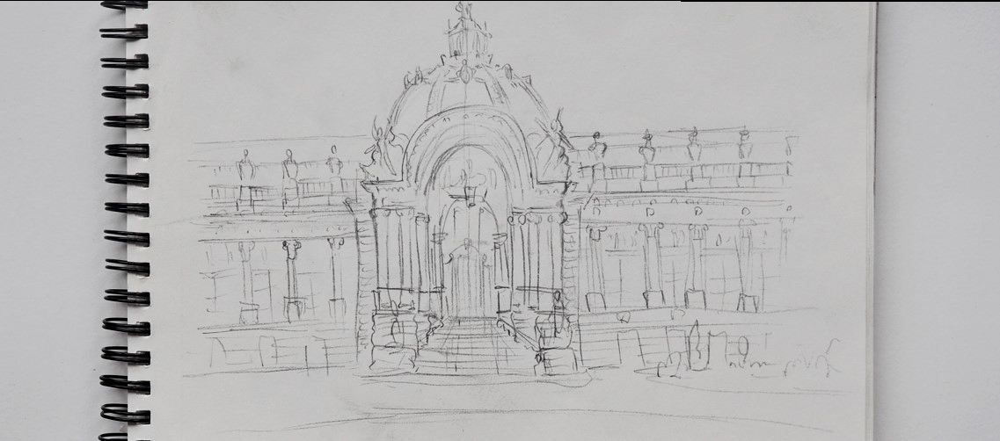
Dessin d'observation
Carnet de croquis
Lors de ma 1ère année de DNMADE, nous avons eu pour devoir de tenir un carnet de croquis d’observation régulier dans le but de nous familiariser avec l’expression plastique et nous pousser à étudier les formes qui nous entourent.
J’ai depuis continué cette pratique, dessinant régulièrement, généralement dans les transports en commun.
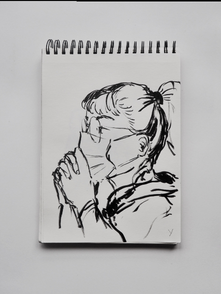
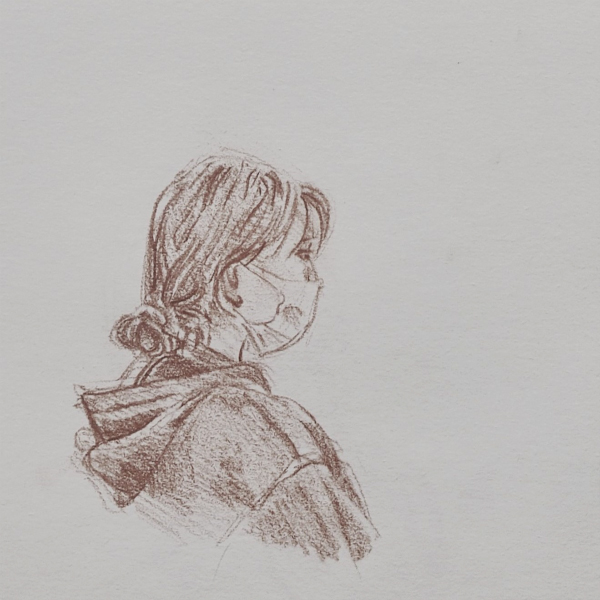
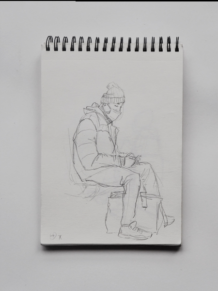
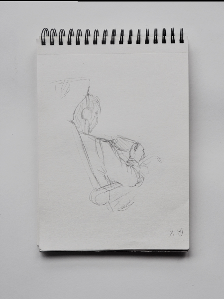
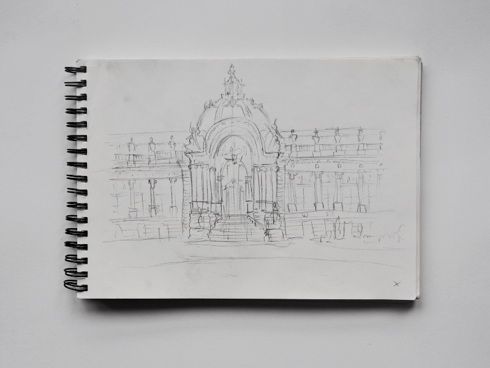
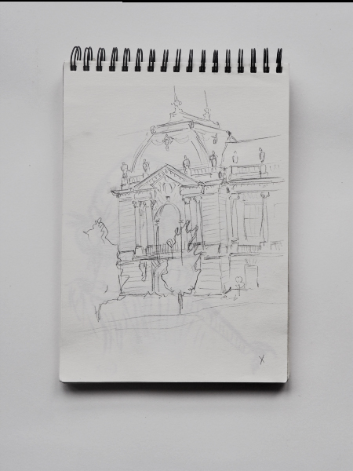
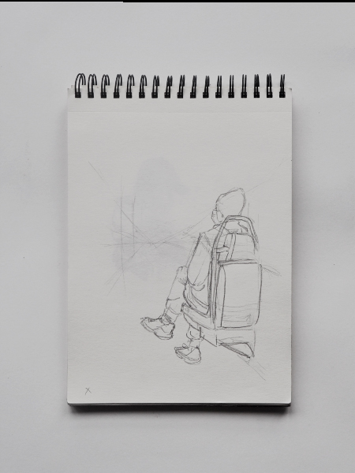
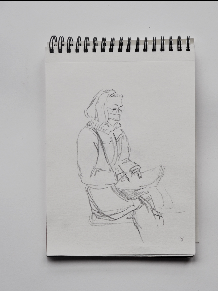
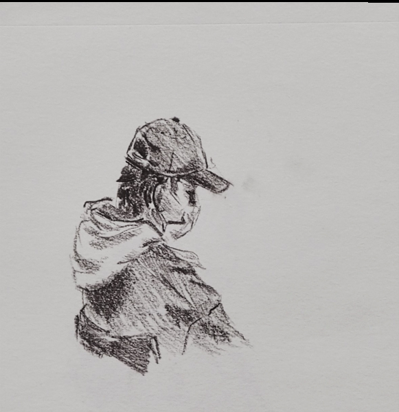
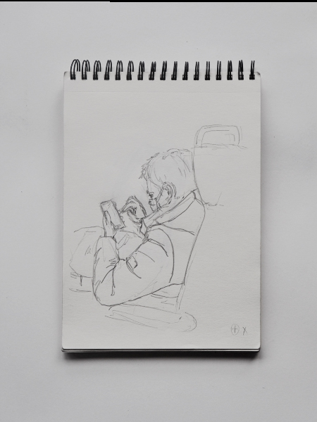
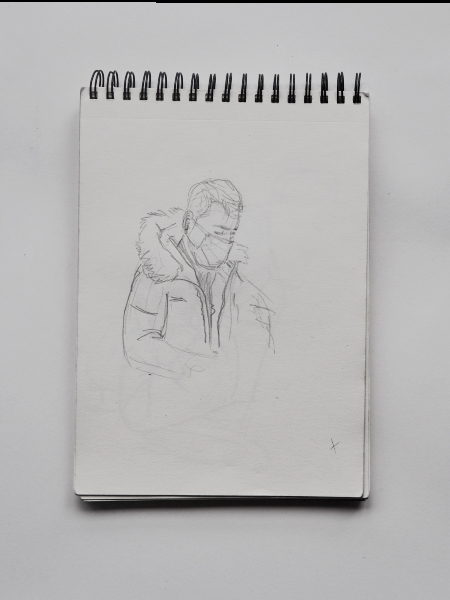
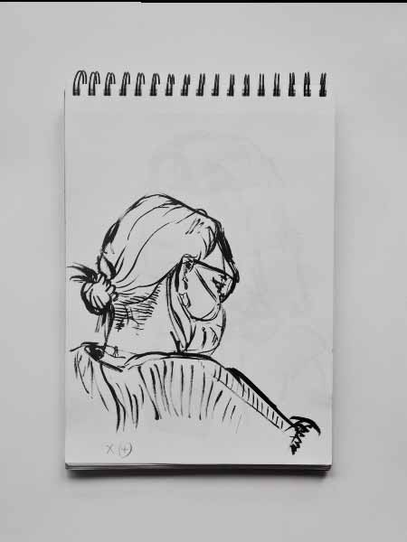
Modèles vivant
En cours de pratique plastique à l’ENSAAMA, j’ai eu l’occasion de pratiquer le dessin de modèle vivant. Cela m’a permis de me familiariser à l’utilisation d’outils tels que le crayon, le bic ou le fusain mais également de mieux comprendre la structure d’un corps humain et comment l’exprimer plastiquement.
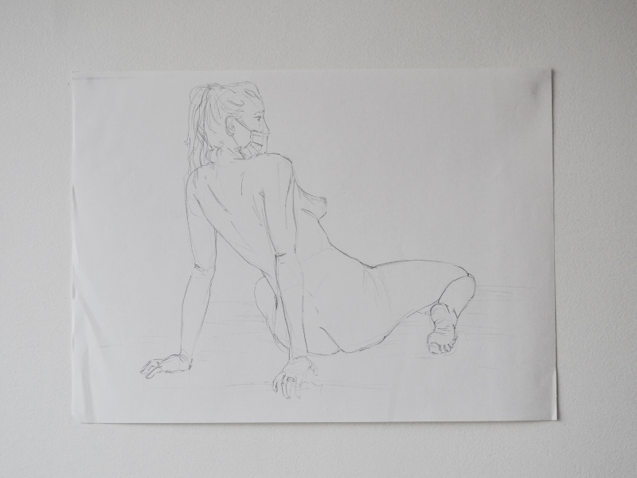
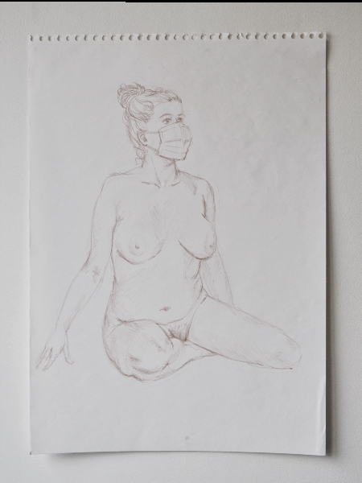
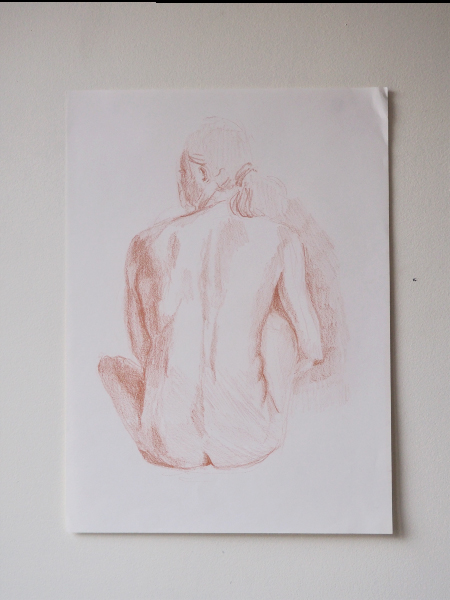
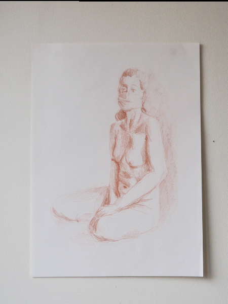
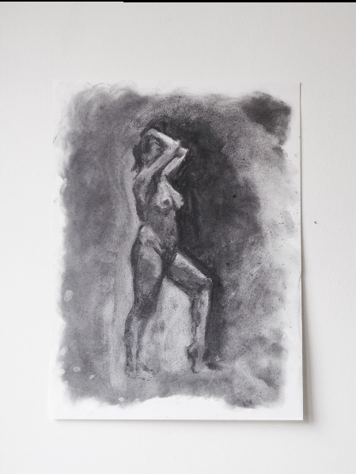
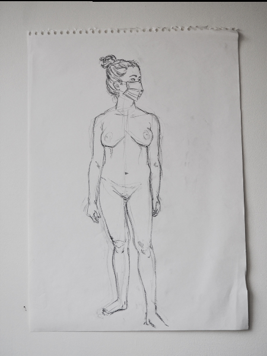
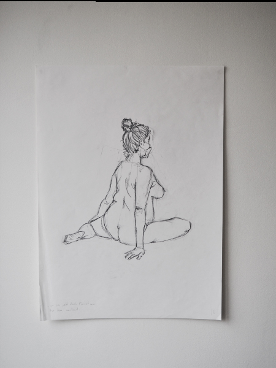
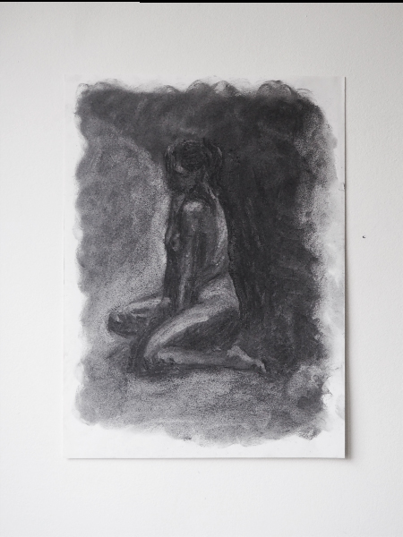
Natures Mortes
Nous avons également réalisé plusieurs sessions de natures mortes, parfois l’outil plastique étant imposé parfois l’objectif étant d’explorer différents outils sur un même sujet.
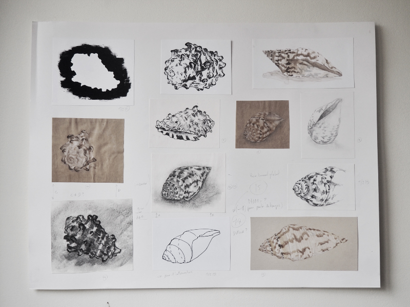
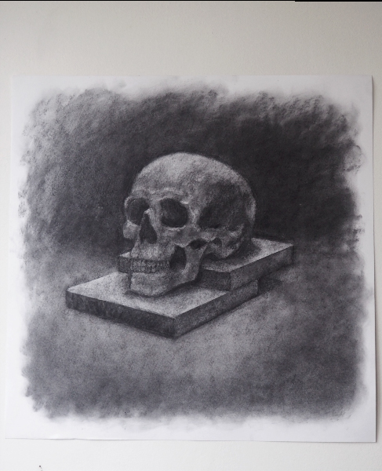